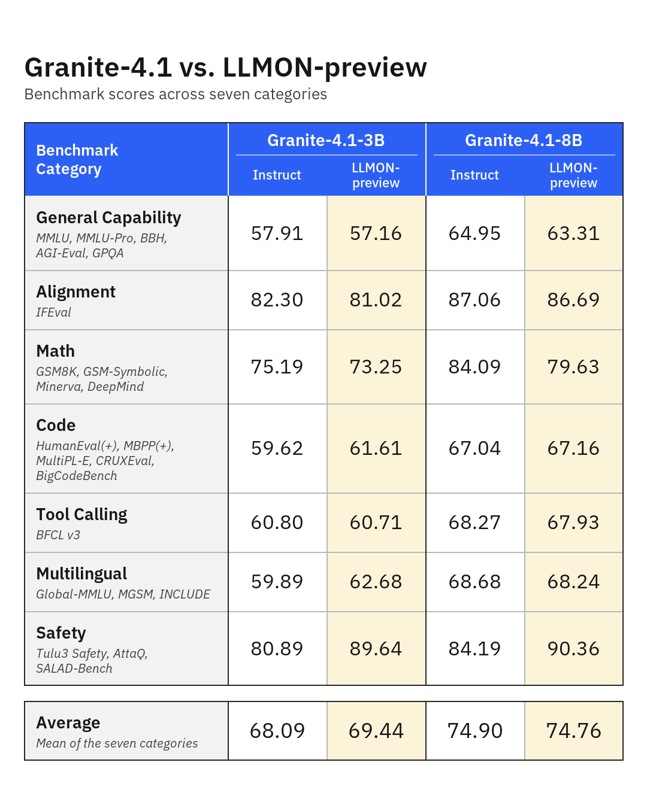

Granite 4.1 LLMON：把执行关系教进模型
发布、接口与实际开放
公开3B/8B权重与模板、转换工具/示例；本轮只下载模型卡、HTML报告、模板和官方图，没有权重/数据/PDF，也没有调用模型。卡列12种语言，训练语料主要英语，不能把多语评测等同多语结构泛化已解决。
六种分隔符是保留的单token，不与普通正文共享标点语义；块有类型、唯一ID，嵌套路径在当前位置展开。ID由固定字符集两字符组成，引用成本两token。exec.instruction/system决定权威；exec.input指向的数据、文档、工具schema和结果仍是被读取材料。未绑定块仍在上下文，不是被删去或attention mask隔离。
apply_chat_template把消息转换为LLMON；instruction/data/requirement等列表的exec=True/False决定是否引用。普通user.content按可执行指令处理；不能误把不可信网页塞入它。system跨轮保持；tool结果为data。输出仍可用<tool_call>接口。输入普通chat格式会分布外退化，模板/解析器/工具回写必须一并对齐，不能只换权重。

数据构建与SFT、GRPO、DPO
| 来源 | 样本量 | token量 |
|---|---|---|
| 通用单轮/多轮 | 3.25M / 59k | 2.79B / 120M |
| RAG单轮/多轮 | 27k / 8k | 45.5M / 17.8M |
| 工具调用单轮/多轮 | 451k / 251k | 707M / 562M |
| Alpaca原样/干扰增强 | 52k / 103k | 17.2M / 39.4M |
| Dolly原样/增强 | 15k / 30k | 3.3M / 16.3M |
| 注入训练 | 约130k | 211M |
作者合计约4.4M例/4.6B token，分项四舍五入不强行精确求和。注入分通用40k、RAG11k、工具80k；干扰数指令1–3、无关数据0–3，8类变体，答案不变。通用/RAG/工具占93.6% tokens。工具轨迹包含“用户→工具调用”与“工具结果→最终回答”两个exec周期。
六分隔符重映射未用词表槽，不扩embedding矩阵；全参SFT三epoch，序列4096，8×H100/FSDP，最终epoch。随后约169k prompts做五阶段GRPO：多域推理、RLHF、知识校准、两次数学boost；最终约1k在策略注入偏好对做DPO，β=.1、1epoch、LR5e-7、有效batch32。没有公开全部底层私有语料和训练run，不能把方法描述等同完整复现包。

实验、完整结果与研究判断
3B OPI ASR100→.1、ASB99.2→5.6；8B96.3→.02与52.8→3.1。ARES使用808种子扩到约15k攻击，八策略；多轮用DeepSeek-V3.2攻击、GPT-OSS120B判断、20轮预算。3B/8B间接robustness84.6/79.8，但直接37.1/32.7，多轮28/37；远非通用安全保证。训练时注入与测试静态/自适应攻击覆盖不同，不用静态分数替代真实agent攻击面。
上下文额外开销约7–15%；未系统测吞吐/延迟。IFR/DAS/LEAK从最终生成token对目标/干扰span的注意力比例诊断；3B25–34层差异大、最终39层IFR回落。它是相关性证据，不是因果电路证明。

下列四张论文表完整保留行列，再附两款模型卡全量细分表。类别平均与模型卡单项分数不能混作同一种量尺。博客能力图Code的3B/8B为61.61/67.16，论文表1为65.45/71.01；博客图包含BigCodeBench等不同聚合集，不能静默合并成一张成绩表。博客七类含Safety平均也不等于论文六能力平均。
| IFR=A(ℐt)A(ℐt)+A(ℐd)\text{IFR}=\frac{A(\mathcal{I}_{t})}{A(\mathcal{I}_{t})+A(\mathcal{I}_{d})} | (1) |
| DAS=A(𝒟t)A(𝒟t)+A(𝒟d)\text{DAS}=\frac{A(\mathcal{D}_{t})}{A(\mathcal{D}_{t})+A(\mathcal{D}_{d})} | (2) |
| LEAK=A(ℐd)+A(𝒟d)A(𝒮)\text{LEAK}=\frac{A(\mathcal{I}_{d})+A(\mathcal{D}_{d})}{A(\mathcal{S})} | (3) |
| Model | Training | General | Alignment | Math | Code | Tool-Calling | Multilingual | Safety |
|---|---|---|---|---|---|---|---|---|
| Granite-4.1-3B | Instruct | 57.91 | 82.30 | 75.19 | 64.19 | 60.80 | 59.89 | 80.89 |
| LLMON | 57.16 | 81.02 | 73.25 | 65.45 | 60.71 | 62.68 | 89.64 | |
| Granite-4.1-8B | Instruct | 64.95 | 87.06 | 84.09 | 72.38 | 68.27 | 68.68 | 84.19 |
| LLMON | 63.31 | 86.69 | 79.63 | 71.01 | 67.93 | 68.24 | 90.36 |
| Model | Training | OPI ↓\downarrow | ASB ↓\downarrow |
|---|---|---|---|
| Granite-4.1-3B | Instruct | 100.0 | 99.2 |
| LLMON | 0.1 | 5.6 | |
| Granite-4.1-8B | Instruct | 96.3 | 52.8 |
| LLMON | 0.02 | 3.1 |
| Model | Training | Indirect | Direct | Multi-turn |
|---|---|---|---|---|
| Granite-4.1-3B | Instruct | 2.8 | 17.6 | 15.0 |
| LLMON | 84.6 | 37.1 | 28.0 | |
| Granite-4.1-8B | Instruct | 0.7 | 9.2 | 15.0 |
| LLMON | 79.8 | 32.7 | 37.0 |
| IFR ↑\uparrow | DAS ↑\uparrow | LEAK ↓\downarrow | ||||
|---|---|---|---|---|---|---|
| Layer | LLMON | Inst. | LLMON | Inst. | LLMON | Inst. |
| 25 | 86.5 | 25.8 | 59.1 | 38.0 | 8.6 | 44.9 |
| 28 | 87.2 | 37.7 | 62.2 | 36.6 | 6.3 | 34.9 |
| 31 | 63.8 | 15.3 | 53.9 | 37.2 | 12.2 | 40.6 |
| 34 | 75.8 | 26.3 | 57.9 | 35.6 | 6.4 | 47.2 |
| 39 | 28.0 | 17.2 | 47.0 | 40.2 | 13.7 | 39.7 |
3B模型卡逐项
| Benchmarks | Metric | 3B-LLMON | 3B-Instruct |
|---|---|---|---|
| General Tasks | |||
| MMLU | 5-shot | 68.05 | 67.02 |
| MMLU-Pro | 5-shot, CoT | 46.08 | 49.83 |
| BBH | 3-shot, CoT | 74.04 | 75.83 |
| AGI EVAL | 0-shot, CoT | 65.70 | 65.16 |
| GPQA | 0-shot, CoT | 31.92 | 31.70 |
| Alignment Tasks | |||
| IFEval Avg | 81.02 | 82.30 | |
| Math Tasks | |||
| GSM8K | 8-shot | 86.96 | 86.88 |
| GSM Symbolic | 8-shot | 79.60 | 81.32 |
| Minerva Math | 0-shot, CoT | 65.94 | 67.94 |
| DeepMind Math | 0-shot, CoT | 60.48 | 64.64 |
| Code Tasks | |||
| HumanEval | pass@1 | 84.15 | 81.71 |
| HumanEval+ | pass@1 | 78.66 | 76.83 |
| MBPP | pass@1 | 76.72 | 71.16 |
| MBPP+ | pass@1 | 65.87 | 62.17 |
| CRUXEval-O | pass@1 | 32.75 | 40.75 |
| BigCodeBench | pass@1 | 38.60 | 32.19 |
| MULTIPLE | pass@1 | 54.53 | 52.54 |
| Tool Calling Tasks | |||
| BFCL v3 | 60.71 | 60.80 | |
| Multilingual Tasks | |||
| MMMLU | 5-shot | 59.01 | 57.61 |
| INCLUDE | 5-shot | 56.71 | 52.05 |
| MGSM | 8-shot | 72.32 | 70.00 |
| Safety | |||
| SALAD-Bench | 97.25 | 93.95 | |
| AttaQ | 85.54 | 81.88 | |
| Tulu3 Safety Eval Avg | 86.13 | 66.84 | |
8B模型卡逐项
| Benchmarks | Metric | 8B-LLMON | 8B-Instruct |
|---|---|---|---|
| General Tasks | |||
| MMLU | 5-shot | 74.20 | 73.84 |
| MMLU-Pro | 5-shot, CoT | 53.11 | 55.99 |
| BBH | 3-shot, CoT | 80.88 | 80.51 |
| AGI EVAL | 0-shot, CoT | 73.30 | 72.43 |
| GPQA | 0-shot, CoT | 35.05 | 41.96 |
| Alignment Tasks | |||
| IFEval Avg | 86.69 | 87.06 | |
| Math Tasks | |||
| GSM8K | 8-shot | 89.16 | 92.49 |
| GSM Symbolic | 8-shot | 86.30 | 83.70 |
| Minerva Math | 0-shot, CoT | 72.20 | 80.10 |
| DeepMind Math | 0-shot, CoT | 70.86 | 80.07 |
| Code Tasks | |||
| HumanEval | pass@1 | 86.59 | 85.37 |
| HumanEval+ | pass@1 | 81.71 | 79.88 |
| MBPP | pass@1 | 85.19 | 87.30 |
| MBPP+ | pass@1 | 74.60 | 73.81 |
| CRUXEval-O | pass@1 | 36.88 | 47.63 |
| BigCodeBench | pass@1 | 44.04 | 35.00 |
| MULTIPLE | pass@1 | 61.08 | 60.26 |
| Tool Calling Tasks | |||
| BFCL v3 | 67.93 | 68.27 | |
| Multilingual Tasks | |||
| MMMLU | 5-shot | 64.96 | 64.84 |
| INCLUDE | 5-shot | 63.60 | 58.89 |
| MGSM | 8-shot | 76.16 | 82.32 |
| Safety | |||
| SALAD-Bench | 97.70 | 95.80 | |
| AttaQ | 86.07 | 81.19 | |
| Tulu3 Safety Eval Avg | 87.31 | 75.57 | |
来源：官方博客、后训练HTML报告、格式HTML报告（已归档，本文精读范围为后训练报告）、代码。格式论文只作补充材料，未声称逐节精读。关联 IBM_Granite。
📊 中文Poster：granite-4.1-llmon_poster_zh.html